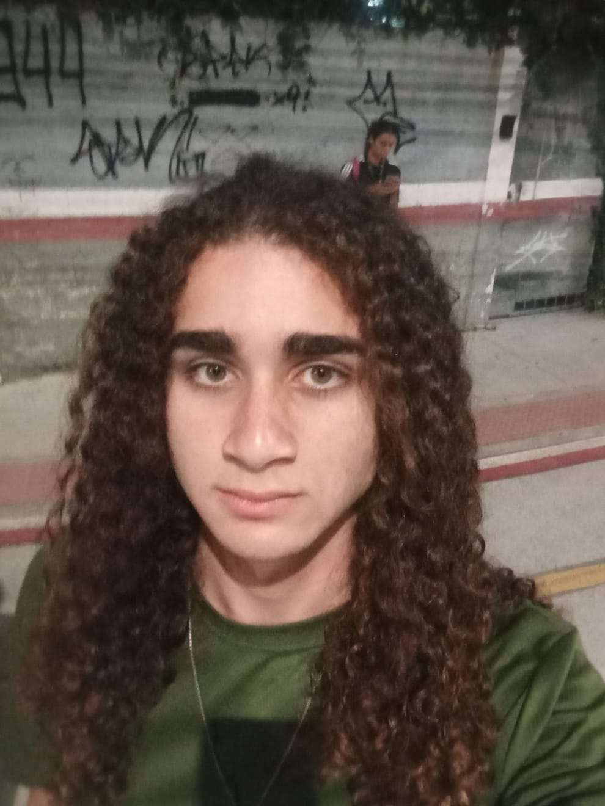

Meu nome é Fábio Ricardo. Sou um estudante de Ciência da Computação na Universidade de Vila Velha, desde jovem estudo áreas que envolvem tecnologia e programação e no momento estou em busca de oportunidades para aplicar meus conhecimentos.
Gosto de cultura geek, desenhar e fazer crochê.
Minhas músicas preferidas são osts de jogos como Megalovania e as músicas de fundo tranquilas de Undertale.
Fiz meu fundamental 1 do primeiro ao quinto ano na UMEF ANTONIO DEBARCELLOS, meu sexto a oitavo na UMEFTI PROFESSOR RUBENS JOSÉ VERVLOET GOMES (VILA OLÍMPICA), meu nono ano no MAURA ABAURRE e meu Ensino médio foi completo na EEEM PROFESSOR AGENOR RORIS e agora estou cursando faculdade de ciências da computação na UNIVERSIDADE DE VILA VELHA, desejo me aprofundar no meu inglês, aprender mais a fundo a programação em diversas linguagens e começar algum estágio na área de tecnologia.
Participei de um projeto da FAPES PICJr em 2024 com o tema de painéis fotovoltaicos.
Quero me tornar desenvolvedor profissional.